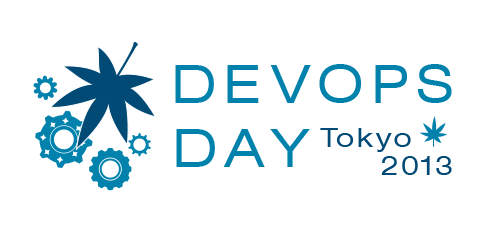

<% @eventhome = @page.directory.split(File::SEPARATOR)[0..1].join(File::SEPARATOR) %>

- Date: **<%= render(:partial => "/#{@eventhome}/_target_date") -%>**
- Location: **<%= render(:partial => "/#{@eventhome}/_target_location") -%>**

If your company is interested in sponsoring this event, [Send an email to the organizers](mailto:<%= render(:partial => "/#{@eventhome}/_email_organizers") %>).



- 開催日時： **<%= render(:partial => "/#{@eventhome}/_target_date_ja") -%>**
- 会　　場： **<%= render(:partial => "/#{@eventhome}/_target_location_ja") -%>**

このイベントへのご協賛をお待ちしております。</br>
[organizers-tokyo-2013@devopsdays.org](mailto:<%= render(:partial => "/#{@eventhome}/_email_organizers") %>)
